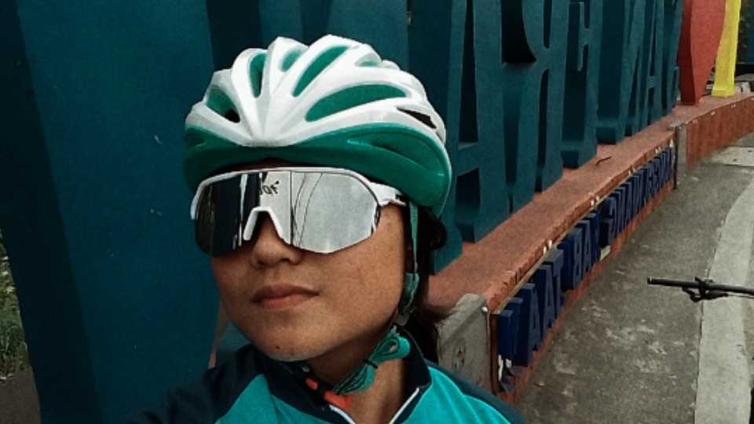
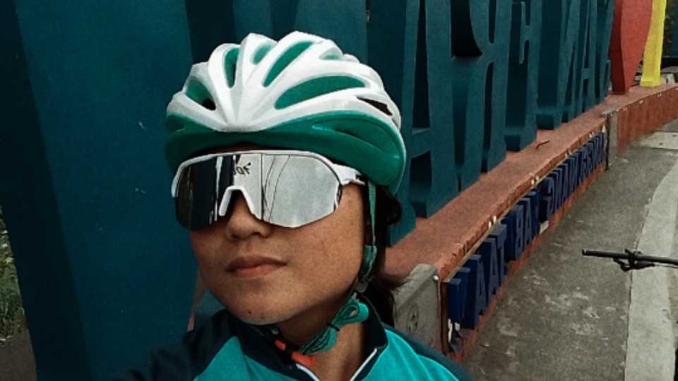
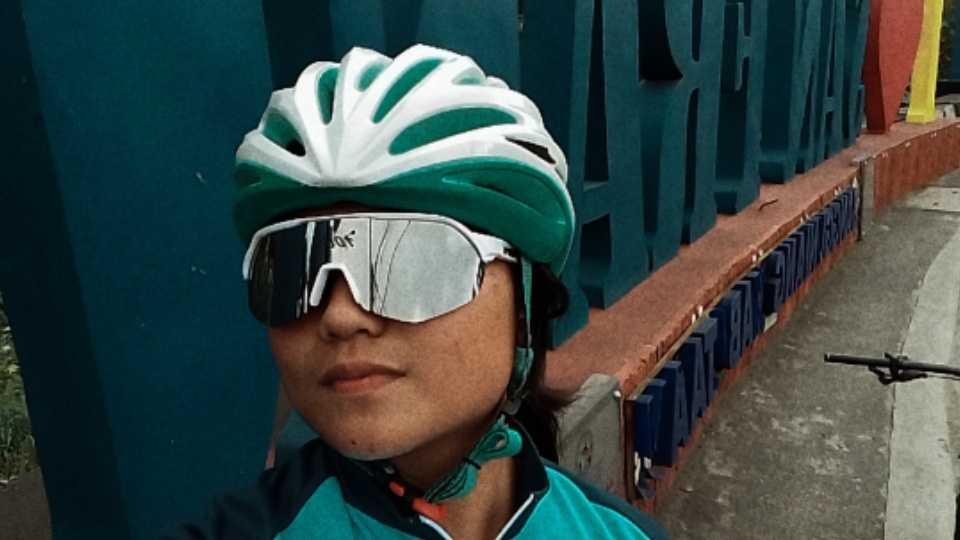

Welcome to my personal page! I am someone who loves learning and trying new things. I enjoy playing the guitar, biking to explore new places, and diving deeper into computers and technology. This page is a glimpse into who I am, what I love to do, and the experiences I've had.
As a student, I believe in working hard and never giving up. I'm always striving to improve myself, both academically and personally. Outside of my studies, I enjoy exploring new interests in music, technology, and travel. I also love biking and discovering new places. Connecting with people who share these passions is something I truly enjoy.
